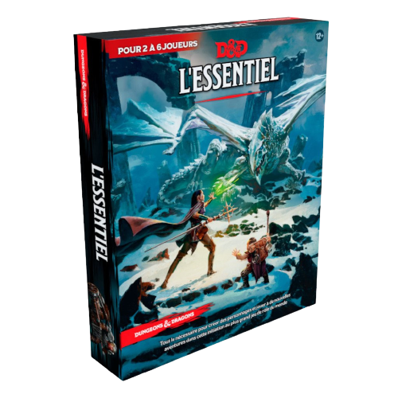
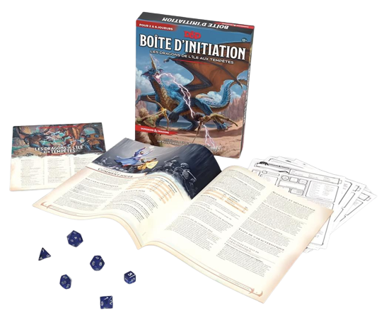
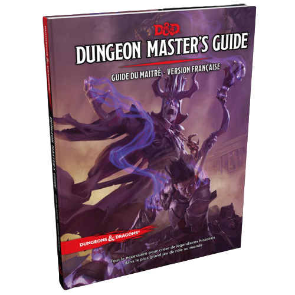
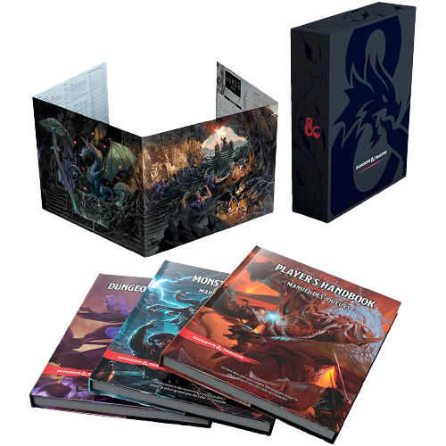

Le plus gros jeu de rôle du monde
Dongons & Dragons (D&D) est un jeu de rôle (JdR) populaire dans lequel les joueurs créent des personnages imaginaires et les guident à travers des aventures fantastiques, généralement dans un monde médiéval-fantastique rempli de créatures mythiques et de magie. Le jeu est dirigé par un maître du jeu (MJ), également appelé "dungeon master" (DM), qui crée et anime l'histoire, interprète les personnages non-joueurs (PNJ) et arbitre les règles du jeu. Les joueurs quant à eux, décident des actions de leur personnage et lancent des dés pour déterminer les résultats de ces actions. Les règles de D&D sont basées sur une série de dés à six faces et utilisent un système de points de vie pour représenter la santé des personnages. Les joueurs peuvent choisir parmi une grande variété de races et de classes, comme les elfes, les nains, les mages, les guerriers ou les voleurs, chacun avec leurs propres capacités et compétences uniques. D&D est un jeu social et collaboratif qui encourage l'imagination, la créativité et la coopération entre les joueurs. Il est apprécié par des millions de personnes dans le monde entier depuis sa première publication en 1974.
L'univers de Dungeons & Dragons est un monde de fiction médiéval-fantastique rempli de magie, de créatures mythiques, de royaumes en guerre et de dangers à chaque coin de rue. Les joueurs peuvent explorer des donjons remplis de pièges, de monstres et de trésors, parcourir des terres sauvages pleines de bêtes sauvages, participer à des batailles épiques contre des ennemis puissants, ou encore se plonger dans des intrigues politiques et des mystères ésotériques. Le monde de D&D est généralement divisé en différentes régions ou royaumes, chacun ayant sa propre histoire, sa propre culture et ses propres enjeux. Il peut inclure des races fantastiques telles que des elfes, des nains, des orcs, des dragons, ainsi que des dieux et des démons. Cependant, chaque univers de D&D est unique et peut être personnalisé par le MJ pour s'adapter aux préférences des joueurs et des histoires qu'ils souhaitent raconter.
Voici un exemple de produits vendus de la licence Donjons et Dragons :
   Je me suis mis au jeu de rôle il y a plus de 10 ans mais ce n'est qu'avaec D&D que je me sent le plus à l'aise ! J'ai fais différents jeu de rôle durant ma vie comme de la science fiction et du médieval fantastique. Mon rêve serait créer une grande campagne mettant en scene des divinités et des épreuves ardues pour les joueurs !